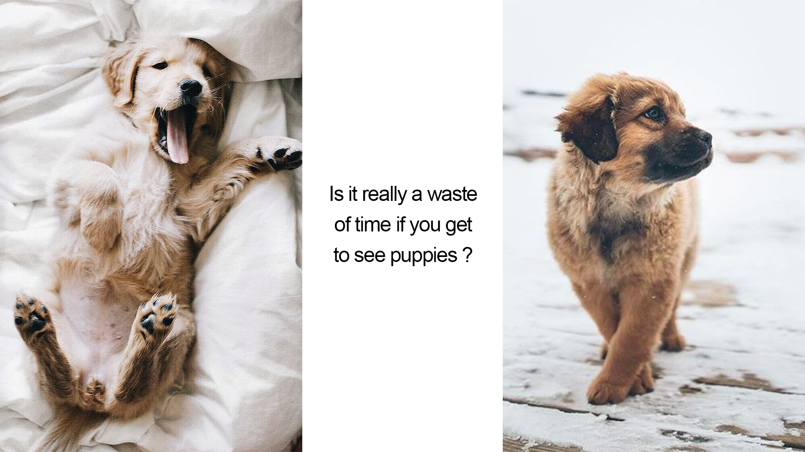

You are the "I don't want to feel alone" type!
For you, social medias are the perfect place to go while waiting, always have your phone near you
Be ready to scroll ...
I know, waste of time, but keep scrolling it's a long way down...
